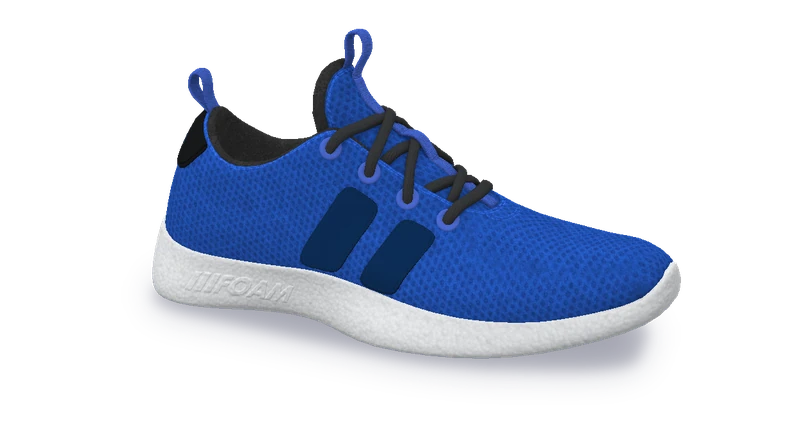

Shoe credit

The interactive sneaker uses Materials Variants Shoe, © 2021 Shopify, distributed by the Khronos Group under Creative Commons Attribution 4.0 International. Edition Lab rendered 48 angles of the Midnight variant with a cobalt color adjustment, studio lighting and contact shadows. The shoe illustrates the rotation control. The transaction sample covers Yeezy 350 and Off-White × Nike.